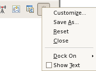
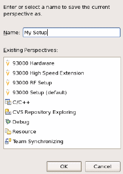

Saving and resetting a perspective
You can save a perspective as your own perspective or reset it to the default state.
Procedures
Save a perspective
- Right-click the perspective header and select Save As....

- Select .
The Save Perspective As window opens.
- Type in a name for your perspective and click OK.

Reset a perspective
- Right-click the perspective header and select Reset.
- Select from the main bar.
Functional changes
- Introduced before SmarTest 6.3.2